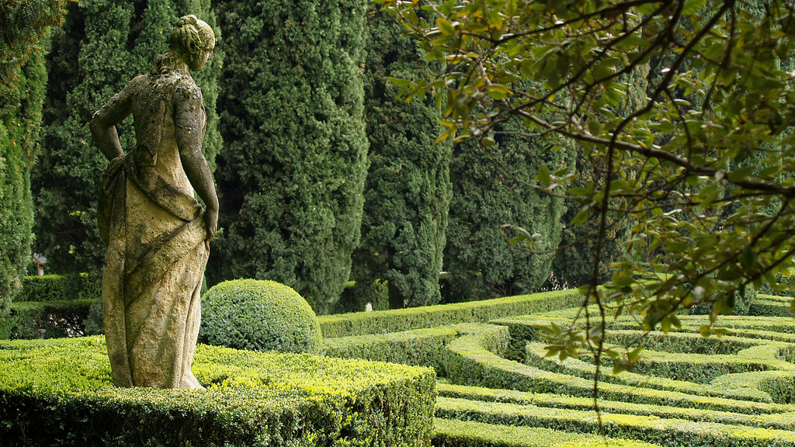

Gdzie już nie czekał nikt
Jesień roku 1913. Rilke, pogrążony w kryzysie twórczym, czeka na nową falę inspiracji, pragnie bowiem ukończyć najważniejsze dzieło swego życia, „Elegie duinejskie”. Ich zarys naszkicował ponad rok wcześniej, przelał na papier kilka fragmentów, ma już koncepcję całości, lecz brakuje mu słów, obrazów i idei, którymi wypełni to niezrównane dzieło poetyckie.
Przyjaciółka i protektorka poety, księżna Marie von Thurn und Taxis, kreśli w swym dzienniku następującą notatkę:
Ostatniego wieczoru odniosłam wrażenie, iż przejmuje go lęk niepokojący. Słowa dobywające się z jego ust świadczyły o roztrzęsieniu i nadzwyczajnej nerwowości.
Rilke wyznaje wówczas księżnej, że wreszcie uzmysłowił sobie, iż całe swe życie trwał w złudzeniach. Zawsze bowiem jedynie ulegał uczuciom, pragnieniom, życzeniom innych. „Żar namiętności innej kobiety — pisze księżna Taxis — przejmował go takim entuzjazmem, iż uznawał go za własny. Mniemał, iż winien bez reszty odwzajemnić to, czym go obdarowano”.
Zapragnął wreszcie sam żywić uczucia, zaznać pożądania i prawdziwej miłości. Zrozumiał, że poddawał się iluzjom, które roztapiały się w nicość. Wciąż tylko towarzyszyły mu zmaganie, zwątpienie, wyrzuty wobec samego siebie. Nigdy zaś poczucie, że żyje pełnią życia.
Księżna Marie z iście matczyną troską zastanawiała się, jak odnaleźć tę bliską, siostrzaną duszę, której Rilke z utęsknieniem wyczekiwał, a która była jedynie marzeniem. Ich wspólny znajomy, Rudolf Kassner, dodał w rozmowie: „To wielki błąd, nie móc zrozumieć, że jest się samemu na świecie. Im wyżej człowiek się wznosi, tym bardziej się odeń oddala”.
Dopiero dwa lata później odnajdzie Rilke słowa naznaczone ostatecznym zrozumieniem:
Czy nie mam racji, wy, coście kochali
mnie za wstęp mały do kochania, który
wciąż porzucałem, bo mi przestrzeń w waszej
twarzy, gdym kochał, zmieniała się w przestwór,
gdzie już nie czekał nikt…
Fragment „Czwartej elegii duinejskiej” w przekładzie M. Jastruna.